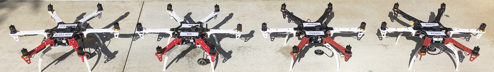

We're developing the Autonomous Vehicle Infinite Air Time Apparatus, or AVIATA: a system that will be capable of carrying payloads in the air indefinitely. To do this, we plan to use a drone swarm to hold a central frame supporting the payload, allowing us to swap individual drones in and out whenever they run low on battery. With this design, AVIATA will have the reliability and versatility to assist in emergency relief, environmental monitoring, and supply transportation.
Our proposal has been accepted by the NASA Aeronautics Research Mission Directorate (ARMD) in the University Student Research Challenge (USRC). More than that, we're motivated by our project's potential impact: AVIATA is the first of its kind, achieving endless flight time with a compact system that can be quickly manufactured and delivered. Aviation technology is progressing rapidly, and it is our hope that AVIATA will help influence and define the next breakthroughs in autonomous flight.
Check out our GoFundMe page for more promotional material!
As of September 18th, 2020, we've started a blog on this website for writing periodic updates on this research project! The full list of posts can be found on the AVIATA Blogs page.
Our AVIATA team presented our initial conceptual designs to a panel of UCLA engineering faculty and alumni on October 30, 2020. We received great feedback and suggestions before we began acquiring materials and equipment to test fly drones.
Our AVIATA team presented our project with subsystem specific tests, data, and analysis to a panel of UCLA engineering faculty and alumni on February 19, 2021. We acquired very useful feedback and suggestions for our next steps towards integrating the subsystems together.
Three of our senior team leads presented AVIATA to an audience of NASA engineers and researchers at the USRC Tech Talk session on June 14, 2021. Here we showcased the initial testing of the intermediary four-drone frame and the successful docking procedure using computer vision.
This project was made possible by our generous GoFundMe supporters, including:
Thank you to our supporters who gave us these wonderful drone names, giving each drone a unique personality.

These results are based upon work supported by the NASA Aeronautics Research Mission Directorate under award number 80NSSC20K1452. This material is based upon a proposal tentatively selected by NASA for a grant award of $10,811, subject to successful crowdfunding. Any opinions, findings, and conclusions or recommendations expressed in this material are those of the authors and do not necessarily reflect the views of NASA.